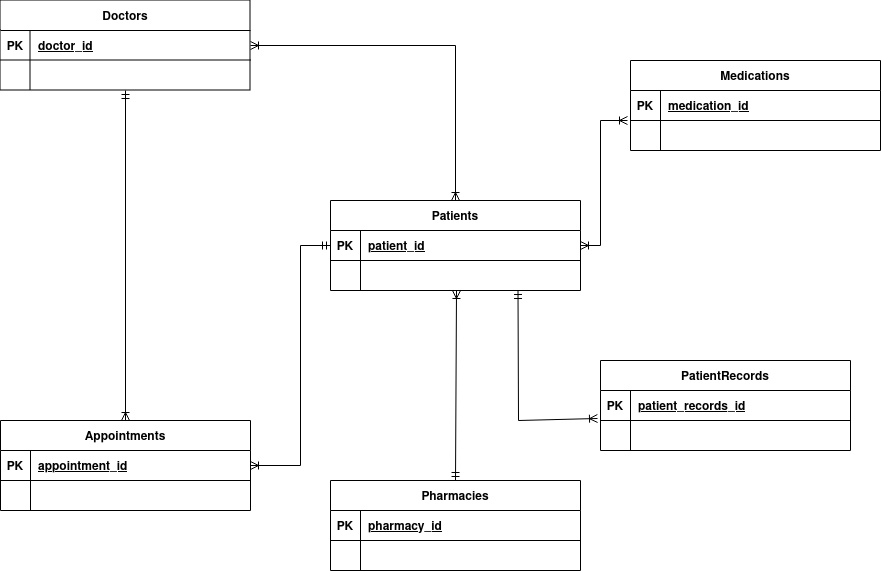

Curing Everything Clinic is a hospital located in Corvallis that treats approximately 2,500 patients daily across multiple departments. To manage this high volume of patients, the clinic needs a backend database to efficiently handle patient information, along with the care and medication prescribed to these patients. The system below would allow for administrators to keep track of their patients, doctors, medications prescribed, and previous or upcoming appointments. With this management system, administrators are able to better manage over 80,000 unique patient records, manage a team of 100 doctors, and facilitate an average of 3,500 appointments per day.
The database will store essential information about each patient, including contact details, medical history, and insurance coverage. To enhance continuity of care and comprehensive medical history tracking, each patient’s medical records will be documented within the database, capturing detailed information such as condition names, diagnosis dates, and treatment notes. The system will also record each patient’s preferred pharmacy to centralize prescription and medication logistics by linking patients directly with pharmacies for a seamless medication fulfillment process.
Information about each doctor employed by the clinic will also be stored, capturing their specialty, contact information, and license number. This setup allows for efficient appointment scheduling by matching patients with available doctors and storing key appointment details, such as date, time, and reason for the visit. Additionally, the system will track any medication prescribed to patients, including the medication name, dosage, and the schedule for taking the medication.
This database-driven website will streamline clinic operations, enabling administrators and medical staff to quickly access and update patient records and each doctor’s information, and ensure that patients receive timely and coordinated care.
